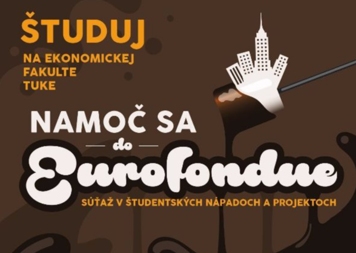
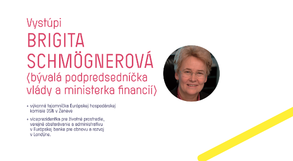

Vyhlásenie súťaže EUROFONDUE 2018
EkF TUKE vyhlasuje ďalší ročník súťaže študentských nápadov a projektov pre stredoškolákov: Namoč sa do EUROFONDUE.

Diskusia o budúcnosti Európy
Dňa 24. 10. 2017 od 9:30 hod., v Univerzitnej knižnici TUKE, môžete diskutovať o budúcnosti Európy s pánom Dušanom Chrenekom a pánom Ladislavom Mikom.

Pani Brigita Schmögnerová na EkF TUKE
Dňa 17. októbra 2017 o 9:30 hod. vystúpi v rámci Košického ekonomického fóra pani Brigita Schmögnerová s prednáškou na tému: Od zlatého štandardu cez lokálne a paralelné meny k „sovereign money“.
Pán Ľudovít Ódor na Ekf TUKE
Dňa 2. mája 2017, o 13:00 hod., v zasadacej miestnosti fakulty vystúpi v rámci Košického ekonomického fóra pán Ľudovít Ódor s prednáškou na tému: Čo nás kríza naučila vo fiškálnej politike.